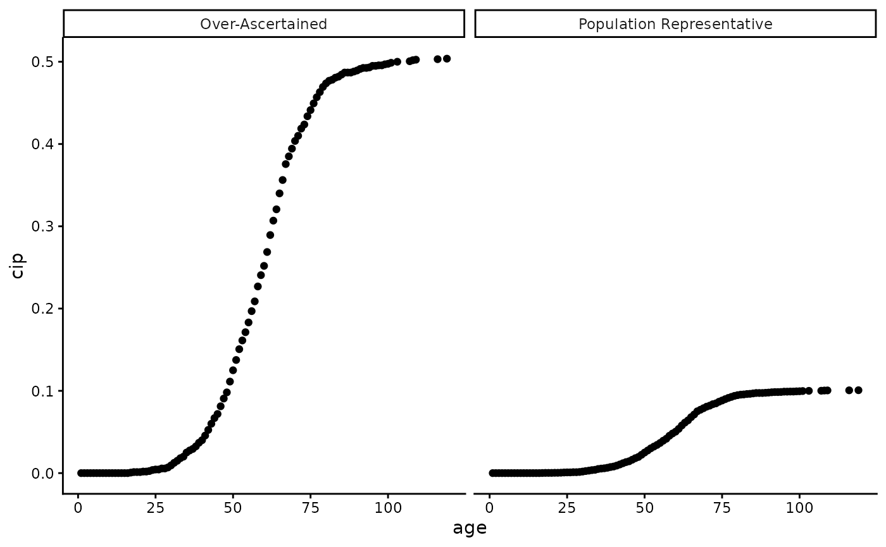
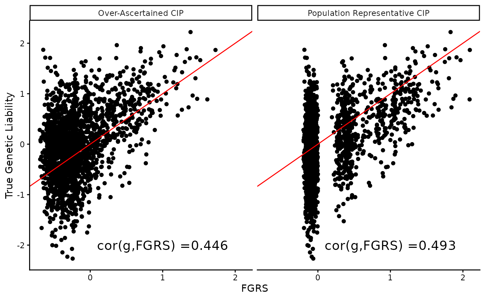

Reflections on the use of population representative CIPs
Emil Pedersen
2026-03-16
Source:vignettes/CIP_importance.Rmd
CIP_importance.RmdThis vignette is intended to serve as cautionary tale of why population representative CIPs are preferred when estimating genetic liabilities. The true impact of using CIPs that are not population representative is currently unknown.
In practice, this means that the CIPs should be calculated in a population sample that is representative of the target population, e.g. national registers, instead of only using the individuals sampled for a biobank such as UK Biobank or iPSYCH.
A long history of calculating CIPs in population representative samples already exist, such as with Carsten Pedersen et al. in the Danish national registers or in Finland with the Riesteys project based on both FinnGen and the Finnish national health registries.
Attempts to make CIPs calculated on an ascertained sample more representative of the target population have been made, such as with inverse probability weighting in iPSYCH (Theresa Wimberley et al.), or attempting to quantifying the participation bias in UK Biobank (Tabea Schoeler et al.).
This vignette will:
- Simulate mock data under the liability threshold model
- Calculate CIPS that are
- Population representative
- Over-ascertained
- Estimate FGRS using both CIPs
- Compare the results
# load libraries
library(LTFGRS)
library(dplyr)
library(stringr)
library(lubridate)
library(ggplot2)
library(rmarkdown)
# setting seed
set.seed(555)Simulating mock data
We will set some population parameters:
h2 = 0.5 # heritability
K = 0.1 # population prevalenceWe simulate a family consisting of two parents, one sibling, and the proband.
family = tribble(
~id, ~momcol, ~dadcol,
"pid", "mom", "dad",
"sib", "mom", "dad",
"mom", NA, NA,
"dad", NA, NA)We will use this small family to generate a suiable covariance matrix, that will be used to generate liabilities for the family members based on the liability threshold model.
# constructing covariance matrix for the family
tmp_graph = prepare_graph(family,
icol = "id",
mcol = "momcol",
fcol = "dadcol")
cov_mat_obj = get_covmat(fam_graph = tmp_graph,
h2 = 0.5,
add_ind = TRUE,
index_id = "pid")
SIGMA = cov_mat_obj[rev(colnames(cov_mat_obj)),rev(colnames(cov_mat_obj)) ]Next, we will replicate the small family times with an iterator for each family:
# number of families to construct (iterations)
nsim = 2e3
# add an identifieer to each family member per simulation
# format is: <name><iteration>
trio = lapply(1:nsim, function(i) {
tmp_res = lapply(seq_along(family), function(col) {
paste(family[[col]], i, sep = "")
})
names(tmp_res) = colnames(family)
tmp_res %>% as_tibble()
}) %>% bind_rows
# setting NAs to be NAs again
trio = trio %>% mutate(across(everything(), ~ ifelse(str_detect(.x, "NA"), NA, .x)))
print(trio)## # A tibble: 8,000 × 3
## id momcol dadcol
## <chr> <chr> <chr>
## 1 pid1 mom1 dad1
## 2 sib1 mom1 dad1
## 3 mom1 NA NA
## 4 dad1 NA NA
## 5 pid2 mom2 dad2
## 6 sib2 mom2 dad2
## 7 mom2 NA NA
## 8 dad2 NA NA
## 9 pid3 mom3 dad3
## 10 sib3 mom3 dad3
## # ℹ 7,990 more rowsMock phenotypes
With each family replicated
times, we can now perform
draws from a multivariate normal distribution with a suitable covariance
matrix to generate liabilities for each individual in each family. We
use convert_liability_to_aoo() to link the full liability
of an individual to the age of onset. We use a logistic function to link
the two.
# simulated liabilities for each individual
liabs = MASS::mvrnorm(n = nsim, mu = rep(0, nrow(SIGMA)), Sigma = SIGMA)
# generating age of onset and status info
liabs2 = as_tibble(liabs) %>%
mutate(across(-pid_g,
~ round(purrr::map_dbl(.x = .x, .f = LTFGRS:::convert_liability_to_aoo, pop_prev = K)), .names = "{col}_aoo"),
# adding age columns with random ages for controls and aoo for cases
across(contains("aoo"),
~ ifelse(is.na(.x),
sample(1:100, size = sum(is.na(.x)), replace = TRUE),
.x), .names = "{col}_age"),
# generating status
across(6:9,
~ (!is.na(.x)) + 0, .names = "{col}_status"))
colnames(liabs2) = str_replace(colnames(liabs2), "aoo_", "")
paged_table(liabs2, options = list(max.print = 100))Calculating CIPs
When CIPs are calculated in a population representative sample, they will more closely reflect the true risk an individual has already lived through. If we assume the population is fully observed, i.e. no censoring, then we can use a naïve estimate of the CIP. If censoring is present in a sample, a more flexible approach must be used Kaplan-Meier or, if competing events are likely to be present, Aalen-Johansen.
# if we assume the population is fully observed, i.e. no censoring. Then we can calculate the cIP as:
CIP = lapply(c("pid", "sib", "mom", "dad"), function(x) {
ph = liabs2 %>% select(contains(x)) %>%
# we do not need the liability
select(contains("aoo"), contains("age"), contains("status"))
colnames(ph) = str_replace_all(colnames(ph), paste0(x, "_"), "")
ph
}) %>%
bind_rows() %>%
group_by(age) %>%
summarise(n_cases = sum(status),
n_total = n()) %>%
ungroup() %>%
arrange(age) %>%
mutate(cip = cumsum(n_cases) / sum(n_total))If instead a CIP from a population representative sample is not available. It is possible to calculate the CIP from the sampled data only, however, this is likely to not accurately capture the true risk an individual has lived through relative to the population that they originate from. Some samples, like iPSYCH, will be heavily over-represent the cases of the iPSYCH phentoypes, while UK Biobank is known to skew towards more women than men and be healthier than the general population. These sample biases can be avoided with population representative CIPs.
A simple way to generate a CIP that has roughly 50% cases, but with no complex sampling, such as sex differences, socio-economic status, etc., is to scale the population representative CIP up.
A graphic reprentation of the differences between the two CIPs is shown below:
plot_data_CIPs =
bind_rows(
CIP %>% mutate(type = "Population Representative"),
CIP_ds %>% mutate(type = "Over-Ascertained")
)
# how does the CIP look like in both scenarios?
plot_data_CIPs %>% ggplot(aes(x = age, y = cip)) +
geom_point() +
facet_grid(~type) +
theme_classic()
Note: The difference between the two CIPs is only for illustrative purposes. In practice, the difference may be more complex depending on the sampling scheme of the biobank or study in question, where age or age of onset distirbutions may be different between the two.
FGRS with population representative CIPs
We can now calculate the FGRS for the probands in our simulated data using the population representative CIP.
First, we calculate the upper and lower threshold for each individual based on their CIP.
thresholds = lapply(c("pid", "sib", "mom", "dad"), function(x) {
ph = liabs2 %>%
mutate(fid = 1:n()) %>%
select(fid, contains(x)) %>%
# we do not need the liability
select(fid, contains("aoo"), contains("age"), contains("status"))
colnames(ph) = str_replace_all(colnames(ph), paste0(x, "_"), "")
left_join(ph %>% mutate(age = pmax(pmin(age, 99), 1)),
select(CIP, age, cip),
by = join_by(age)) %>%
mutate(thr = qnorm(cip, lower.tail = F),
lower = ifelse(status == 1, thr, -Inf),
upper = ifelse(status == 1, Inf, thr),
pid = paste0(x, fid))
}) %>%
bind_rows()Then we build the population graph and family graphs that automatically identifies all family members up to degree :
# using duplicated families to create a population graph
pop_graph = prepare_graph(.tbl = trio,
icol = "id",
mcol = "momcol",
fcol = "dadcol",
node_attributes = thresholds %>% select(pid,lower, upper) %>% rename(id = pid))
# autmatically detecting family members:
fam_graphs = get_family_graphs(pop_graph = pop_graph,
ndegree = 1,
proband_vec = str_subset(trio$id, "pid"))Finally, we can calculate the FGRS using the population representative CIP thresholds:
pop_rep_fgrs = estimate_liability(
family_graphs = fam_graphs,
h2 = h2,
family_graphs_col = "fam_graph")## The number of workers is 1FGRS with over-ascertained CIPs
Now, we estimate the FGRS using the CIPs simulated to be from an over-ascertained sample.
# thresholds from over-ascertained CIPs
thresholds_ds = lapply(c("pid", "sib", "mom", "dad"), function(x) {
ph = liabs2 %>%
mutate(fid = 1:n()) %>%
select(fid, contains(x)) %>%
# we do not need the liability
select(fid, contains("aoo"), contains("age"), contains("status"))
colnames(ph) = str_replace_all(colnames(ph), paste0(x, "_"), "")
left_join(ph %>% mutate(age = pmax(pmin(age, 99), 1)),
select(CIP_ds, age, cip),
by = join_by(age)) %>%
mutate(thr = qnorm(cip, lower.tail = F),
lower = ifelse(status == 1, thr, -Inf),
upper = ifelse(status == 1, Inf, thr),
pid = paste0(x, fid))
}) %>%
bind_rows
# using duplicated families to create a population graph
pop_graph_ds = prepare_graph(.tbl = trio,
icol = "id",
mcol = "momcol",
fcol = "dadcol",
node_attributes = thresholds_ds %>% select(pid,lower, upper) %>% rename(id = pid))
# autmatically detecting family members:
fam_graphs_ds = get_family_graphs(pop_graph = pop_graph_ds,
ndegree = 1,
proband_vec = str_subset(trio$id, "pid"),
fam_graph_col = "fam_graph_ds")
# estimating the gentic liabilities:
fgrs_ds = estimate_liability(
family_graphs = fam_graphs_ds,
h2 = h2,
family_graphs_col = "fam_graph_ds")## The number of workers is 1Comparing the results
Finally, we can compare the estimated genetic liabilities from the two different CIPs to the true genetic liabilities used in the simulation.
plot_data = bind_rows(
tibble(genetic_liab = liabs2$pid_g,
FGRS = pop_rep_fgrs$est,
type = "Population Representative CIP"),
tibble(genetic_liab = liabs2$pid_g,
FGRS = fgrs_ds$est,
type = "Over-Ascertained CIP"))
cor_data = group_by(plot_data, type) %>% summarise(r = cor(genetic_liab, FGRS))
plot_data %>%
ggplot(aes(x = FGRS, y = genetic_liab)) +
geom_point() +
geom_abline(slope = 1, intercept = 0, color = "red") +
facet_grid(~type) +
geom_text(data = cor_data,
aes(x = 1, y = -2, label = paste0("cor(g,FGRS) =", round(r, 3))), size = 5) +
ylab("True Genetic Liability") +
theme_classic()
The correlation between the true genetic liability and the estimated FGRS is higher when using population representative CIPs compared to over-ascertained CIPs. Since this is simulations, we are able to quantify the difference, but in real data applications, the true genetic liability is unknown, and therefore it is not straight forward to quantify the impact of using non-population representative CIPs. Since both correlations are high, the difference may not be obvious, but it is still present and may impact downstream analyses or simply reduce power slightly. The true impact is currently unknown.